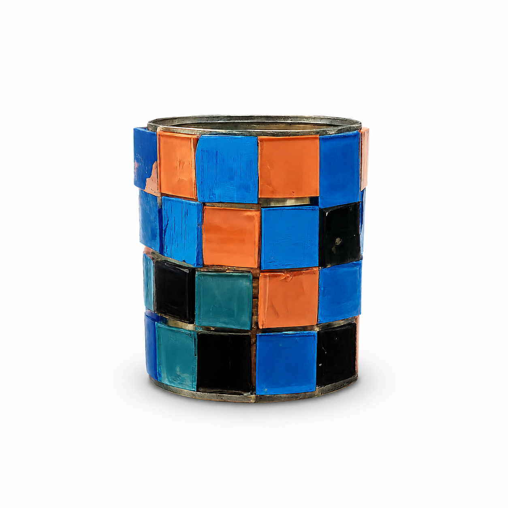

Esta maceta fue realizada a partir de un recipiente reutilizado y decorada con pequeños cuadrados de vidrio de diferentes colores, organizados en forma de mosaico. Los tonos azules, naranjas, celestes y negros crean un diseño llamativo que combina arte y reciclaje.
El proyecto tiene como objetivo demostrar que materiales que suelen ser descartados, como los restos de vidrio, pueden reutilizarse para crear objetos útiles y decorativos.
A través de esta propuesta se busca fomentar el cuidado del medio ambiente, reduciendo residuos y promoviendo la reutilización de materiales mediante técnicas sencillas y creativas.
Además de su función como maceta, esta pieza constituye una expresión artística que pone en práctica técnicas de diseño y trabajo manual. Su elaboración requirió planificación, selección de materiales, distribución de los mosaicos y ensamblado cuidadoso de cada pieza de vidrio.